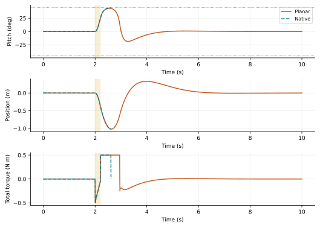
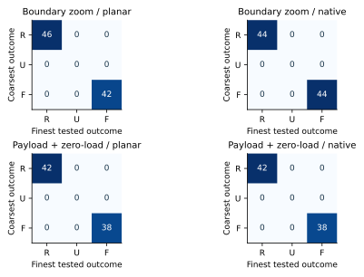
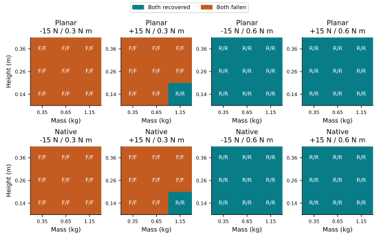
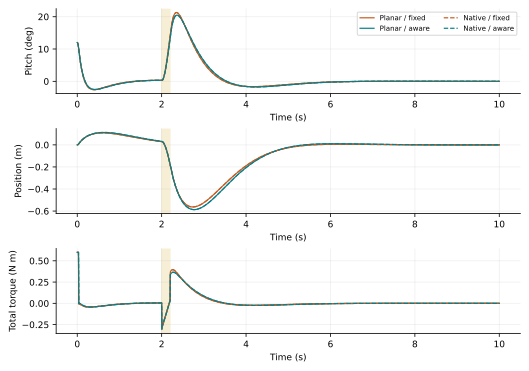

MICHAEL AGBO / BOUNDARY AND PAYLOAD COMPARISON
Fall-boundary agreement and payload-aware control in MuJoCo
Scope and principal findings
This supplement extends the nominal simulator check to fall-adjacent conditions and rigid payloads. It compares the existing analytical planar model with a free-body MuJoCo wheel-contact model under matched controllers, sampling periods and prescribed disturbances. Each engine closes its own feedback loop. Neither engine is treated as ground truth. The work is computational verification and discrepancy analysis; no physical robot or hardware calibration is included.
The coarse boundary grid contains 88 conditions: the two engines agree on every outcome, including 32 recoveries and 56 falls. An exploratory follow-up subdivides every observed transition interval to 0.05 N or 0.05 deg. In those 88 zoom conditions, 86 finest-tested three-way outcomes agree and 2 disagree. The zoom is selected from coarse results, not a new independent held-out sample.
The payload extension uses nine loaded mass/height combinations, four force/torque scenarios, two fixed gain designs and both engines, plus an unloaded control. At the common primary 0.25 ms step, engines agree in 36/36 loaded fixed-LQR cases and 36/36 loaded payload-aware cases. Their conclusions about whether redesign prevents or introduces a fall agree in 36/36 conditions.
| Stage | Conditions | Integrations | Finest-pair agreement |
|---|---|---|---|
| Coarse boundary | 88 | 352 | 88/88 |
| Exploratory boundary zoom | 88 | 356 | 86/88 |
| Payload + unloaded controls | 40 x 2 gains | 340 | 80/80 |
Payload integration counts include the reduced-model trajectory checks and any selective audits. Zoom endpoints repeat coarse physical conditions. Outcome counts are descriptive properties of these specified grids; they are not deployment probabilities or statistical estimates of success.
1 Protocol, comparability and numerical controls
The coarse force slices start upright and apply signed forces with magnitudes 10-15 N at a 0.3 N m torque limit, 15-20 N at 0.5 N m, or 20-25 N at 0.7 N m. Spacing is 0.5 N. The unforced startup slice uses signed initial tilts 10-15 deg at a 0.1 N m limit, with 0.5 deg spacing. Both signs are evaluated. These intervals were selected from the archived planar robustness study, before running the new MuJoCo comparisons.
After the coarse grid completed, a separate exploratory protocol was fixed: take every adjacent three-way outcome transition in either engine, subdivide each interval into ten equal parts and evaluate all eleven values. This procedure does not assume a monotonic boundary and retains shared endpoints. The follow-up keeps gains, friction, inertia and classification thresholds fixed. No settings were fitted to remove disagreement.
All experiments last at most 10 s. Controls and ideal feedback update every 5 ms. A nonzero horizontal pulse acts from 2.00 through 2.20 s, exactly 40 control intervals unless the robot falls first. Total two-motor torque is clipped to the prescribed limit and split equally between the native wheel motors. Gains are reused from the existing CARE bank with Q = diag(12,2,120,2), R = 1. Fixed LQR uses the nominal gain; payload-aware LQR uses the true load, fixed throughout each run.
A fall is declared at a control endpoint when absolute pitch reaches 45 deg; native roll is also checked. Recovery requires a final continuous dwell of at least one second with |pitch| <=1 deg, |x| <=0.03 m and |vx| <=0.03 m/s, after the pulse ends when nonzero. Native lateral/yaw recovery is not tested. Fall times are quantized to the 5 ms detection interval. Trajectory differences are restricted to the common pre-fall horizon, with no extrapolation after either trial ends.
The planar solver uses RK4; MuJoCo uses implicitfast. The original native contact model remains: sliding friction 1.0, contact time constant 5 ms, torsional friction 0.005, condim 4 and no initial contact-settling warm-up. The axle begins 0.2 mm above the radius. Native chassis pitch inertia of 0.0002 kg m² remains additional to the ideal planar assumptions. Thus any discrepancy can involve contact, startup or extra inertia; it cannot be attributed solely to slip [1,2].
All 1048 stored integrations pass source-hash, finite-state, timing, torque-limit, pulse-window and engine-warning checks. The 32 coarse/zoom endpoint trajectories repeated at the same physics step are bitwise identical. Both archived JavaScript payload examples reproduce their outcome, with state errors below 1e-4 in each coordinate's native units despite using a smaller integration step in the new Python runner.
2 Fine boundary map and observed transitions

| Slice / limit N m | Sign | Planar | Native |
|---|---|---|---|
| force, 0.3 | -1 | 11.85R to 11.9F | 11.85R to 11.9F |
| force, 0.3 | +1 | 11.85R to 11.9F | 11.85R to 11.9F |
| force, 0.5 | -1 | 18.2R to 18.25F | 18.15R to 18.2F |
| force, 0.5 | +1 | 18.2R to 18.25F | 18.15R to 18.2F |
| force, 0.7 | -1 | 21.8R to 21.85F | 21.8R to 21.85F |
| force, 0.7 | +1 | 21.8R to 21.85F | 21.8R to 21.85F |
| startup, 0.1 | -1 | 10.1R to 10.15F | 10.1R to 10.15F |
| startup, 0.1 | +1 | 10.1R to 10.15F | 10.1R to 10.15F |
These are adjacent observed labels, not exact critical values. A recovery/fall interval locates a transition only at the evaluated resolution. It does not guarantee that every intermediate point follows a monotonic ordering. The full coarser map and all per-step classifications are archived.
3 Boundary discrepancy diagnostic

The illustrated pair is recovered in the planar engine and fallen in MuJoCo. Its shared-horizon maximum differences are 0.004051 m and 1.739 deg. Its common observation horizon is 2.615 s. The selection is explicitly post hoc and designed to expose disagreement; the complete grid is the primary evidence.
Disagreeing zoom cells: -18.2 N, +0 deg, limit 0.5 N m: planar recovered, native fallen; +18.2 N, +0 deg, limit 0.5 N m: planar recovered, native fallen. Positive/negative mirror cases are symmetry checks, not independent stochastic evidence.
Among the 42 zoom pairs where both engines fall, the largest absolute fall-time difference is 0.12 s. Matching a binary fall label does not require matching trajectories or the time of threshold crossing. Where only one engine falls, a fall-time difference is undefined and is not reported as zero.
4 Step refinement and numerical sensitivity

The coarse boundary and payload grids use 0.5 and 0.25 ms physics steps. A pair is flagged if engine outcomes differ at the finer step or if either engine changes label when the step is halved. Flagged pairs are repeated in both engines at 0.125 ms; a further repeat at 0.0625 ms is triggered only by another within-engine label change. The exploratory zoom begins at 0.25 and 0.125 ms, with analogous selective steps of 0.0625 and 0.03125 ms. Control and event-detection intervals stay at 5 ms throughout.
| Stage | First-round pairs | Second-round pairs | Last-step changes |
|---|---|---|---|
| Coarse boundary | 0 | 0 | 0 |
| Boundary zoom | 2 | 0 | 0 |
| Payload | 0 | 0 | 0 |
0 engine/condition/controller sequences change outcome between their last two tested steps. The cross-engine zoom disagreements persist after refinement. This supports reporting a model discrepancy at the tested resolutions; it does not identify which model is physically correct or establish an exact limiting boundary. Full records retain every tested resolution.
5 Rigid payload construction and independent checks
![Native MuJoCo renders of three of the nine tested payloads. Gold cuboids use the original 0.08 x 0.12 x 0.06 m shape; heights are measured along the body from the axle. The shell is transparent and a massless noncolliding mast is added for presentation only. Low payload placements intersect the illustrative shell: this is a centred rigid mass arrangement, not a mountable hardware design. Printed COM and inertia refer to combined torso and payload, excluding the translating base and additional native chassis inertia.](../../publication/figures/ext_fig04_payload_models.svg)
The loaded body combines nominal torso mass m0 = 1.2 kg at l0 = 0.18 m with payload mass mp at height h. Its mass is M = m0 + mp and COM is L = (m0 l0 + mp h)/M. Pitch inertia about that COM is I0 + m0(l0-L)² + mp(h-L)² + mp(0.08²+0.06²)/12, with I0 = 0.012 kg m². Native payload roll and yaw inertias also use the cuboid dimensions. The translating base/wheel mass remains 0.35 kg.
MuJoCo represents torso and payload as separate rigidly welded bodies. A total world-X force F is split as F m0/M on the torso and F mp/M on the payload. The sum and its moment about the axle therefore equal a single force at the combined COM. This mapping is verified directly from compiled mass properties and transformed body positions. The native additional chassis inertia is retained rather than silently absorbed into the planar body.
All ten load configurations, including zero payload, pass mass, COM, pitch-inertia and resultant-force/moment checks. 480 reduced-model acceleration cases agree within 1e-9 in their stated acceleration units. All 20 selected loaded ideal-rolling trajectories match the planar outcomes and satisfy a 1e-7 componentwise trajectory tolerance. All 16 unloaded fixed/aware comparisons are bitwise identical at the two base steps. The previous nominal implementation regression also matches exactly.
6 Fixed versus payload-aware outcomes
![Paired fixed-to-payload-aware outcomes at the common primary physics step of 0.25 ms. Each matrix contains 36 loaded conditions (nine mass/height combinations and four force/torque scenarios). Unloaded controls are excluded. R/U/F mean recovered, upright-unsettled and fallen. Both designs use the same Q/R, ideal measurements and true plant; only the gain differs. Counts describe this selected finite grid. Finer-step audits assess sensitivity separately and do not silently change the primary comparison resolution.](../../publication/figures/ext_fig05_controller_outcomes.svg)
| Engine | Controller | Recovered | Unsettled | Fallen |
|---|---|---|---|---|
| planar | Fixed | 19 | 0 | 17 |
| planar | Aware | 19 | 0 | 17 |
| native | Fixed | 19 | 0 | 17 |
| native | Aware | 19 | 0 | 17 |
In planar, redesign turns 0 fixed-controller falls into upright trials and turns 0 fixed-controller upright trials into falls. These paired counts retain the same true load, disturbance and torque budget. They do not rank all LQR designs or all payload conditions.
In native, redesign turns 0 fixed-controller falls into upright trials and turns 0 fixed-controller upright trials into falls. These paired counts retain the same true load, disturbance and torque budget. They do not rank all LQR designs or all payload conditions.
At the primary matched step, fixed-controller engine labels agree for 36/36 loaded conditions and payload-aware labels for 36/36. The engines agree on the direction of the redesign effect on falling for 36/36 cases. Finer audit labels remain available alongside this uniform-step primary analysis.
Among the 38 loaded controller/condition pairs surviving in both engines for 10 s, maximum engine-to-engine differences are 0.00076 m and 0.09792 deg. This full-horizon subset excludes any fallen pair; its trajectory agreement cannot replace the complete fall comparison.
7 Complete payload condition atlas

This focused extension evaluates the nine masses/heights from the previous controller study at four of its 24 ideal force/tilt/torque conditions per load: +12 deg initial tilt, pushes -15 or +15 N, and torque limits 0.3 or 0.6 N m. It includes an unloaded control at the same four conditions. It does not repeat the previous noisy-sensing grid, delayed filters or incorrect load estimates. Consequently conclusions are limited to ideal measurements and exact assumed payloads.
Every primary loaded trial received the scheduled pulse; no pre-push fall occurred. The native model uses a centred rigid payload. Off-axis mounting, pickup during motion, support flexibility, motor electrical dynamics and identified wheel-floor traction remain outside this experiment.
8 Prespecified loaded trajectory

This example was specified in the extension protocol before execution. Its force acts at the true combined COM under both controllers. Gains are selected before a run and held constant; there is no online payload estimator or adaptive gain update. The ideal-rolling dynamics check isolates mass-property implementation, while the native model adds wheel contact and extra degrees of freedom.
9 Paired continuous metrics
![Controller metric changes at the matched 0.25 ms step, restricted to loaded conditions surviving under both controllers in both engines. Each dot is one condition; coordinates are aware-minus-fixed metric differences. The dotted diagonal denotes agreement about the size of the controller effect. Negative values mean a lower metric. This four-way survivor restriction is reported explicitly and must be read with the full fall inventory; it is not an unconditional ranking or statistical confidence statement.](../../publication/figures/ext_fig08_paired_metrics.svg)
There are 19 loaded conditions surviving in all four engine/controller combinations. Restricting continuous full-horizon metrics to this common set avoids comparing a short fallen trajectory with a ten-second recovery, but it excludes failures and must not replace the complete outcome analysis. Squared torque is the time integral of total commanded motor torque squared; it is a control-effort proxy, not electrical energy consumption.
| Metric | Planar | Native |
|---|---|---|
| Squared torque integral ((N m)² s) | -0.0028866 | -0.0026175 |
| Peak absolute pitch (deg) | -0.80873 | -0.80924 |
The plotted differences compare aware and fixed designs within each engine at the same 0.25 ms physics step. Agreement about continuous metrics can be assessed separately from agreement about falling. No confidence intervals or significance tests are assigned to this deterministic, selected set of conditions.
10 Reproduction, limits and use in the manuscript
Engine versions: MuJoCo 4.0.1, NumPy 2.5.4, Python 3.14.2. Run mujoco_lab/run_extension_study.ps1 from the project root to reproduce the coarse boundary study, exploratory zoom, payload study, renders and report in order. Each phase stores source SHA-256 hashes, the applicable protocol, every trial metric and all 200 Hz trajectories. Reporting checks recorded source hashes before using the data. Cached trial results are keyed by source content and complete job settings.
Results are stored separately in results/mujoco_boundary, results/mujoco_boundary_zoom and results/mujoco_payload. Each study.json names the trajectory columns and physical units used in its trajectories.npz. The combined HTML report, summary and rendered payload illustrations are in results/mujoco_extension. Editable LaTeX, standalone vector figures and the PDF supplement are included in the research archive. Baseline data and earlier reports are retained as distinct studies.
These checks strengthen the numerical evidence for the stated nominal and loaded equations. The exploratory zoom is outcome-conditioned, shares coarse endpoints and has finite force/angle resolution. Numerical refinement cannot identify physical parameters or turn a model comparison into a hardware experiment. Additional chassis inertia, contact compliance, the initial contact gap and geometric assumptions remain potential discrepancy sources. General 3D robustness is untested: forces and controller action are sagittal, with no steering or roll controller.
Use the results as a bounded methods and validation supplement, including disagreements and resolution limits. The next research step is to identify actual mass properties, actuator response and traction from a physical design or robot, and to separate calibration conditions from a held-out experimental validation set. Any claim of payload-aware superiority must retain the sensing conditions and controller budgets under which it was observed. Hardware validation remains a separate source of evidence.
References
[1] MuJoCo XML Reference: inertial properties, joints, actuators and contacts. Accessed 12 November 2026. Source
[2] MuJoCo Computation: rigid-body dynamics, contact constraints and numerical integration. Accessed 12 November 2026. Source
[3] MuJoCo API: body velocities, applied forces and simulation state. Accessed 12 November 2026. Source